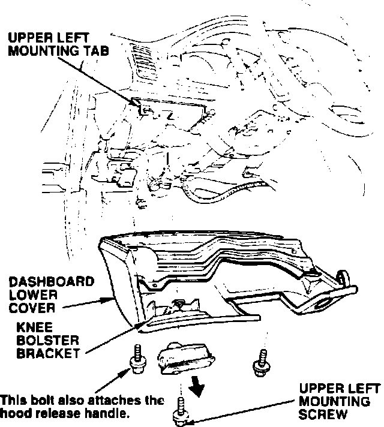

Courtesy Light Controller - Replacement
91acura03
YEAR MODEL BULLETIN NO.
1991 LEGEND LS See VEHICLES
AFFECTED
May 20, 1991
BULLETIN NO. 91-028
Lower Dashboard Cover/Courtesy Light Controller Replacement
PROBLEM
The courtesy light controller cannot be removed from the driver's-side lower dashboard cover without damaging the cover or controller.
VEHICLES AFFECTED
Sedan: through VIN JH4KA7 ... MC026438
Coupe: through VIN JH4KA8 ... MC005668
CORRECTIVE ACTION
Use the following procedure to remove and reinstall the cover/controller.

Removal:
1. Remove the lower dashboard cover's two lower mounting screws.
2. Carefully pry the lower edge of the cover away from the dashboard, then forcibly remove the cover by breaking the knee bolster bracket.
3. Lower the cover and disconnect the courtesy light controller connector. Push the controller from the rear while releasing its retaining clips with a small flat tip screwdriver.
4. Remove the broken knee bolster bracket and the courtesy light controller, then install a new knee bolster bracket (see PARTS INFORMATION).
Installation:
1. If necessary, straighten the upper left mounting tab on the dashboard.
2. Make sure the ignition switch grommet is positioned correctly, then insert the lower dashboard cover's upper right mounting clip into the slot in the dashboard.
3. Install all three cover screws finger-tight. While pushing the cover up and forward, tighten the upper left screw first, followed by the lower left screw, then the lower right screw.
4. Reinstail the courtesy light controller. Turn on the headlights and make sure the courtesy light controller works properly.
PARTS INFORMATION
Knee bolster bracket: P/N 77216-SP0-A00
WARRANTY CLAIM INFORMATION
The warranty information below provides reimbursement for the bracket and the administrative cost of fiiing the claim when this procedure is used during an accessory installation or some other repair.
In warranty: The normal warranty applies. Out-of-warranty: Any repair performed after warranty expiration may be eligible for goodwill consideration by the District Service Manager. You must request consideration, and get the DSM's decision, before starting work.
Operation number: 841113
Flat rate time: 0.2 hour
Failed P/N: 77892-SPO-AO3
Defect code: 030
Contention code: A01